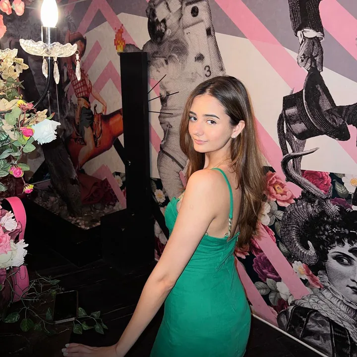
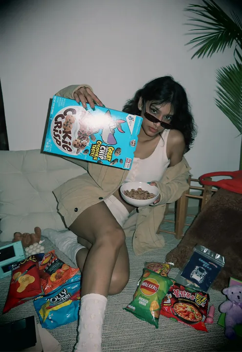
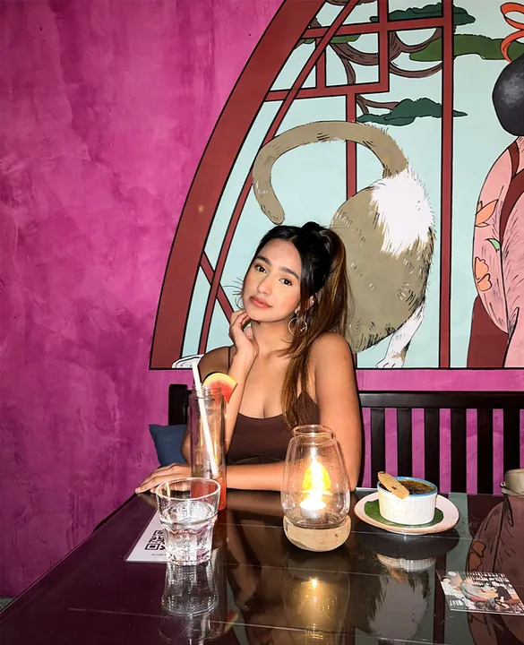
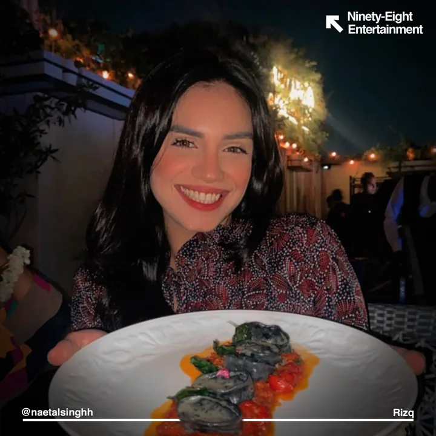
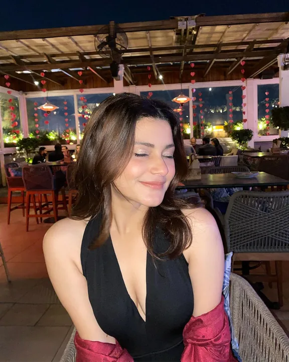

Not just a company, but a collective for the culture. Built by Gen Z, for the dreamers running the next generation’s businesses.
Business partners for hire — to help you scale.








Talent & Branding
Management and representation — athletes, creators, founders — and the practice that sits with it: building individuals into brands worth betting on, plus brand identity for businesses.
Exclusive contractsEditorial & podcastsDeal flowPersonal brandsBrand identity
Enter the vertical ↗ (01)

98 StudioBeta
Our AI product — an AI-first studio where token-based pricing meters human hours and compute hours apart, and the savings from every model advance pass to you, not us. In beta, in the building.
AI-firstToken-based pricingHuman + compute — metered apart
(03)

They didn’t manage my calendar. They built me as a product.
They saw the practice before they saw the player.
Placeholder — quote to come.
Placeholder — quote to come.
Placeholder — quote to come.
Placeholder — quote to come.
Worked with
ET BrandEquity · 2022“IPL 2022: RuPay’s ad positions its payment speed as fast as Ishant Sharma’s bowling.”National trade-press coverage of a campaign fronted by 98’s talent
NPCI press release · 2022“RuPay kicks off IPL innings with ‘RuPay Be On The Go’ campaign featuring Indian cricketer Ishant Sharma.”NPCI’s first-ever IPL campaign — our talent as the face
Times Food Awards · 2023Best Italian Casual Dining, Delhi — Tablespoon. Best Asian Casual Dining, Delhi — Yum Yum Cha.Two national awards, one client group, one year
UNLIMIT · 2023Best Pan-Asian Restaurant in India — Yum Yum Cha.Hosted by @zeezest — the third award of the year
The Economic TimesAn economics column, written by the founder.A public byline, a public archive
Gen Z EconomicsCo-authored with Prof. Tantri (ISB) — how the post-’97 generation thinks about money, work and time.The agency’s intellectual practice, in public
Josh Talks · Delhi CapitalsPodcast features and editorial placements, produced inside the talent practice.Earned media, not bought
You’re building something.
We’re built for that.
Send us one line.
We send back one idea.
Yours to keep. No deck.
No retainer. No chase.
Tell us what you’re building.
WhatsApp instead @98.entertainment
98 Studio is in beta — a limited run of build slots at beta token pricing, and every model advance cuts your bill, not pads ours.